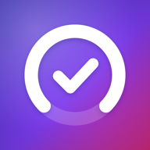

Abonelik Takip
Tüm dijital aboneliklerin tek bir yerde. Reklamsız, hesapsız, verin cihazında.
Destek
Bir sorun mu yaşıyorsun ya da bir önerin mi var? E-posta gönder: mugi-@msn.com
Sık sorulan sorular
Verilerim nerede?
Yalnızca telefonunda. Uygulama internete bağlanmaz ve hiçbir veri toplamaz.
Telefonumu değiştirirsem verilerim ne olur?
Ayarlar > Yedek Al (JSON) ile bir yedek oluştur, yeni telefonda Ayarlar > Yedekten Geri Yükle ile yükle. iCloud veya bilgisayar yedeğinden geri yüklenen telefonlarda veriler de geri gelir.
Hatırlatmalar gelmiyor.
Ayarlar'da "Ödeme hatırlatmaları" açık olmalı, iOS Ayarlar > Abonelik Takip > Bildirimler izni verilmiş olmalı ve aboneliğin formunda hatırlatma günü seçilmiş olmalı.
Farklı para birimlerindeki abonelikler nasıl toplanır?
Kur dönüşümü yapılmaz; toplamlar her para birimi için ayrı gösterilir.
Uygulamada görünen servis adları ve logoları ilgili şirketlerin tescilli markalarıdır. Abonelik Takip bu şirketlerle bağlantılı değildir.